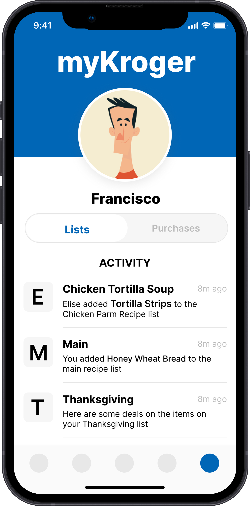
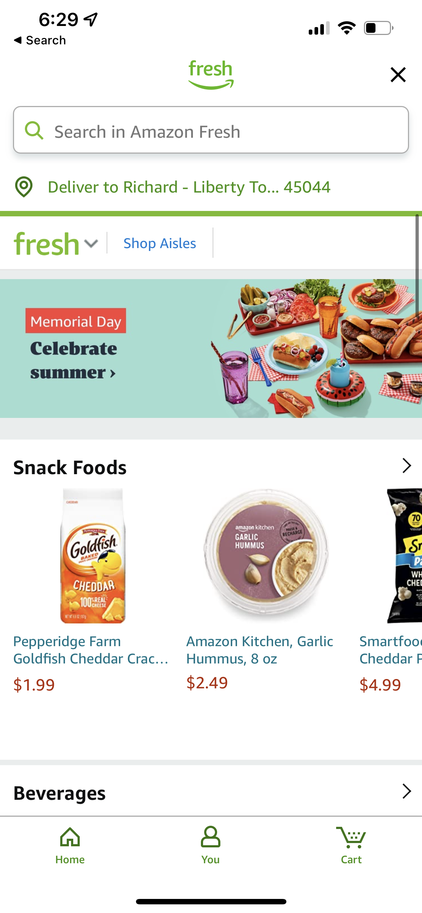
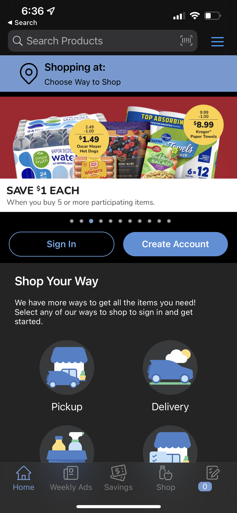
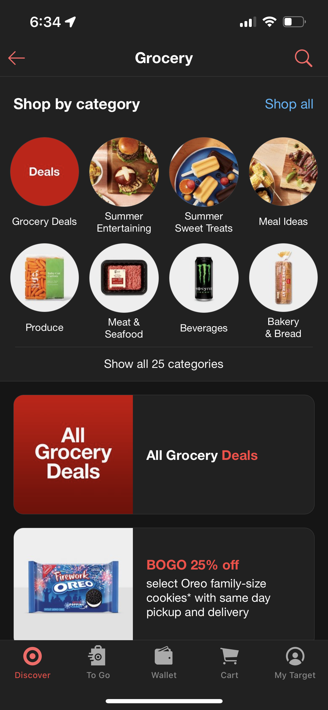
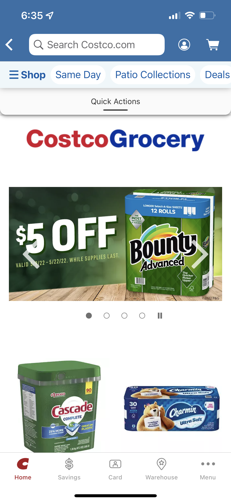
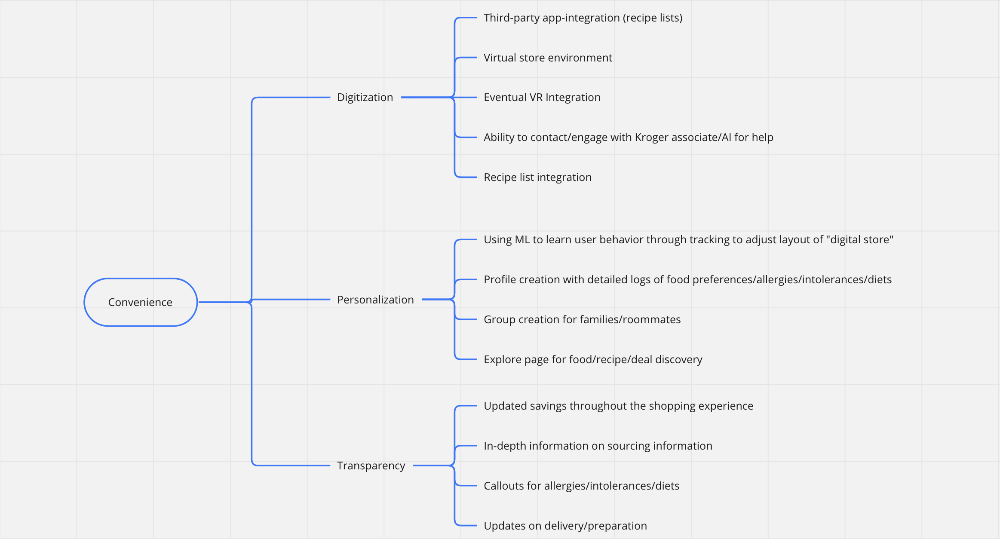
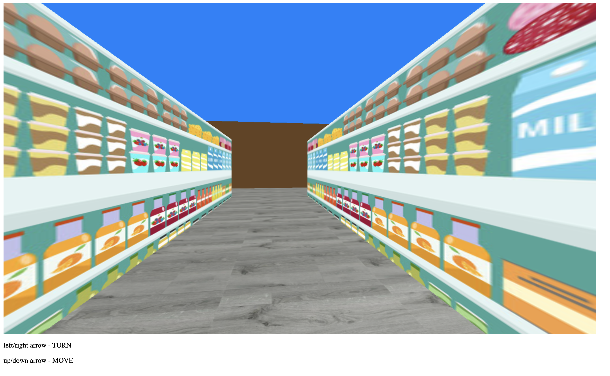

The MyKroger Concept
The idea behind MyKroger was to produce a highly personalized and immersive shopping experience that implements all of the research conducted by Kroger on in-person shopping into their digital experience. Our goal was to work with Kroger and their users to turn the digital grocery shopping experience into something that could accommodate the boom during the pandemic that accelerated projections for digital retail growth.

The Roadmap
1.
Market Research
First, we grasped the current market competition for digital grocery retail and benchmarked Kroger against its competitors. Additionally, we did research on general market and website trends in this space. Here, our goal was to step into the shoes of Kroger's current and future customers through data.
2.
Going Further
My team wanted to go beyond the challenge prompt and explore not only what the current and future landscape were projected to be, but what that could actually look like for Kroger. We wanted to truly innovate their site experience and build out a vision conducive to Kroger's goals.
3.
Prototyping
Myself and Evan Turner developed prototypes of two potential future states of Kroger's site experience. First, I produced set of high-fidelity Figma wireframes that mapped out the user experience in a hybrid state. Second, Evan produced a virtual experience using the Three.js framework that visualized what Kroger's eventual future state could look like.
4.
Presentation
Together we compiled our conclusions and insights into a presentation and delivered them to the marketing team at Kroger in the context of a competition against other teams. I led the development of the narrative structure and visual design of the slide deck. Our team ended up placing first out of five teams.
Part 1: Market Research
Our goal in this part was to develop a comprehensive understanding of the online grocery retail market and benchmark Kroger against its competitors. My team and I conducted online research, user surveys, and competitive analyses to create a holistic vision for how Kroger fits into the space of online grocery retailers and what their current and potential customers value.Personalization
Our research found that 90% of customers said they are much/somewhat more likely to do business with grocery websites/apps offering personalized experiences.Transparency
With an increase in more specialized diets as well as access to food and nutrition information, customers are demanding more transparency from their grocers.Digitization
As technology continues to rapidly develop, competitors are already looking at how to reimagine the grocery shopping experience, and experts claim that a digital edge can provide an invaluable advantage.Amazon: The Golden Standard
Amazon has set the tone for e-commerce regardless of industry, and their influence in what digital shopping experiences look like are especially pervasive in the presence of online grocer's. Many of the leading grocery retailers quickly adopted the algorithmically-driven design that Amazon began to perfect years before competitors created an online presence. The hallmarks of Amazon's experience are:
1.
A strong emphasis on timely relevance.
2.
Module-based convenient categories with personalized options.
3.
Highlights and callouts towards savings.
4.
Powerful search algorithms with diverse options.
5.
Uniquely personalized experiences driven by user-behavior.

Kroger
Walmart

Target
Costco

What was evident across our competitive analysis was that all online grocery retailers are operating within the e-commerce framework built by Amazon. Being that Amazon started as an online-only experience they were uniquely positioned to pioneer what e-commerce looked like. However, we believed that Kroger and other grocers that started in the physical space weren't capitalizing on the wealth of knowledge they've developed over decades of in person shopping experience research.
Market Research Conclusion
Kroger is only matching their competitors in terms of overall site experience. There's no clear current practice that sets Kroger apart from other online grocery retailers. Simultaneously, Kroger's current and potential customers value a shopping experience that prioritizes overall convenience more than anything else. All grocery retailers including Kroger are attempting to out-compete Amazon in a space where Amazon built the standard. They are missing an opportunity to bridge their physical and digital spaces in a way that plays into their unique advantage: proprietary in person shopping research.Part 2: Going Further
During our research we had two insights that led us to producing a product that could help the Kroger team envision what capturing their online shopping growth could look like. First, we learned that a majority of shoppers still very much prefer shopping in person for groceries when they can. What dictates their choices is convenience. Second, we learned that Kroger has conducted an overwhelming amount or proprietary research on in person shopper behavior and is underutilizing it when it comes to their digital shopping experience.Our team linked these two pieces of information and set out to explore solutions that could bridge these ideas while catering to the needs users expressed during our market research: Personalization, Transparency, and Digitization.
The solution we arrived at was to implement Kroger's already successful in person shopping experience into a digital setting retaining only the good parts while improving upon the experience with technological affordances. We called it the MyKroger experience.Brainstorming
After narrowing the scope of our solution we came together and brainstormed features that had a direct correlation to each of the themes that contributed to the overall convenience of online grocery shopping. Part 3: Prototyping
With these features in mind we broke the prototype into two states. The first, a high-fidelity mockup of a mobile app that embodies the idea of a personalized MyKroger digital experience incorporating Kroger's proprietary research on in-person shopping behavior (made by myself in Figma). The second, a virtual experience built in Three.js that embodies a more distant future state in which Kroger has fully implemented their in person shopping research into an immersive virtual reality product (made by Evan Turner in VS Code).User Journey

High Fidelity Mockups
In this prototype kept the best parts of the in person shopping experience while incorporating features unique to a digital environment such as cross-platform integration, asynchronous collaboration, and machine learning for a more convenient experience. The MyKroger concept is a digital store that would continuously adapt and change based on user behavior and input while providing diverse options for personalization giving each user their own unique "store".
Low Fidelity Immersive Three.js Experience
This bare bones experience was meant to help the Kroger team step into the vision that we had for Kroger's website experience far future state in which users would be enveloped into a completely virtual experience - a vision our research proved Kroger's competitors are heading towards.

CLICK ME
Part 4: Presentation & Conclusion
VIEW FULL SLIDE DECK HERE
Three weeks before our deadline, I led the team in the development of our presentation narrative. We crafted a user persona based on our Market Research and used our User Journey to walk the Kroger team through what a use case could look like with the MyKroger experience. Our presentation had two main components, a highlight review of our three main categories of research insight: Personalization, Transparency, and Digitization followed by a product demo. Lastly, we laid out a timeline of implementation.
Our team won the consulting challenged judged by a panel of Kroger employees from both their site development and marketing teams. The panel had this to say about the results:
"The two teams up for final consideration were Team Garrett and Team Richard. The decision was really close and specifically came down to whether Kroger wanted to be able to implement recommendations that would put them on par with their competition or help them outshine the competition. Ultimately, the Kroger Team felt like the creativity and sophistication of Team Richard's recommendations would help elevate them to the next level."
"The two teams up for final consideration were Team Garrett and Team Richard. The decision was really close and specifically came down to whether Kroger wanted to be able to implement recommendations that would put them on par with their competition or help them outshine the competition. Ultimately, the Kroger Team felt like the creativity and sophistication of Team Richard's recommendations would help elevate them to the next level."
-Trevor Bahner, Category Manager II at the Kroger Company
Conclusion
Reflecting on the Kroger challenge, while we were successful in the competition, there were plenty of areas of improvement for myself as a UX Designer as well as a Project Manager.Challenges we ran into & What I'd do differently
In anticipation of my team member's busy schedules, I provided two days for meetings in which they could check in, report their work, and work with me or my assistant project manager to establish new goals for the upcoming week. This proved to cause miscommunication due to the inconsistency of days people showed up to meetings. Next time, I'll work with my team to implement a consistent scheudle where everyone is on the same page.In addition, due to the nature of intellectual property at Kroger, we weren't able to access a lot of user data. This caused a few gaps in our research which we attempted to fill with general market reports. We also recognized that we did not have time to recruit survey respondents that would be diverse enough in background to prove useful. Since empathy and research is so crucial to the design process, next time I'll work with my team to allot more time and resources to ensuring we have as comprehensive of an understanding of our client's users as possible. Specifically, conducting mixed quantitative and qualitative methods to produce at least three user personas would help with this.